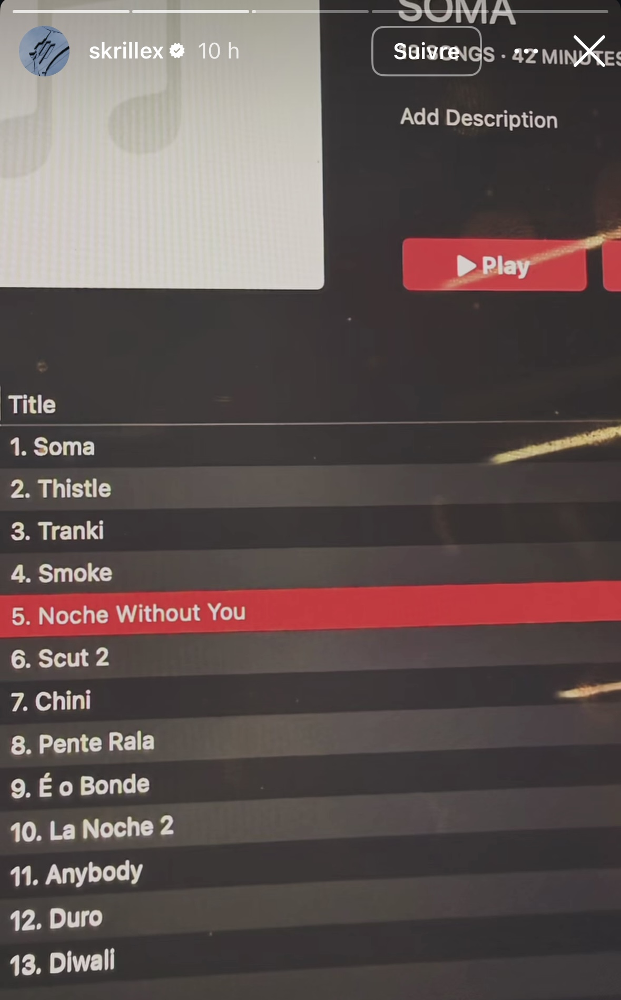

L'annonce
Trois ans. C'est le temps qu'il a fallu à Sonny Moore pour digérer Quest For Fire, le projet double qui avait relancé les débats sur sa place dans la hiérarchie de l'électronique mondiale. Et visiblement, il n'a pas chômé.
Entre temps, il a quand même sorti une bombe en avril 2025 : F*ck you Skrillex you think ur Andy Warhol but ur not!! <3, un album surprise de 34 titres lâché d'abord via un lien Dropbox, puis sur les plateformes dans la foulée. Du dubstep à l'ancienne, des IDs jamais sortis, des collabs avec Wiwek, Habstrakt, Nitepunk et ISOxo. Et un titre d'album qui ressemble à une lettre d'adieu à Atlantic Records, son ancien label, dont il est désormais indépendant.
Skrillex a teasé via une Instagram Story la sortie imminente de son prochain album, intitulé SOMA. Pas de date précise pour l'instant : juste le nom, l'artwork, et cette façon bien à lui de balancer une info sans prévenir. Treize titres, 42 minutes. Court, dense, calibré.

Story de Skrillex | Source : Instagram
La tracklist en entier
Noche Without You apparaît surlignée en rouge dans la Story : le morceau était en cours de lecture au moment de la capture. Smoke (piste 4) et Duro (piste 12) sont déjà sortis en single. La Noche 2 en piste 10 confirme qu'il s'agit d'une suite directe, avec Chris Lake aux crédits. Deux morceaux autour du même univers sonore, sur le même projet. Skrillex construit des arches narratives là où d'autres font juste des features.
Les titres en espagnol et en portugais (Tranki, Pente Rala, É o Bonde, Duro) trahissent une influence latine marquée, cohérente avec la présence de FEID sur l'album. Diwali en closing track, c'est une autre référence culturelle forte, au riddim jamaïcain. SOMA sonne déjà comme un projet qui traverse les frontières sans demander la permission.
Un cast qui dit beaucoup
FEID et ISOxo apparaissent sur le projet, tout comme Chris Lake. Pas anodin de voir ISOxo dans la liste. Le jeune producteur texan, pilier de la scène riddim/bass actuelle, tourne dans le même cercle depuis un moment. Sa présence confirme que Skrillex reste connecté à ce qui bouge, sans forcer le côté "come-back calculé".
SOMA, en grec, signifie "le corps". Pas sûr que ce soit un hasard de la part de quelqu'un qui a mis le corps de son public au centre de chaque release depuis ses débuts.
Contra : le mouvement de fond
En parallèle de SOMA, Skrillex a lancé Contra, un collectif, presque un label d'état d'esprit. Pour le lancement, deux jours de festival à Berlin, dans le Kraftwerk, ce temple industriel qui sublime n'importe quel set quand le son est bon.
Le line-up mélange les générations sans complexe : Skrillex et ISOxo bien sûr, mais aussi Knock2, Blawan, Flowdan, RHR, Tatyana Jane et Hamdi. UK bass, techno, jungle, bass music — Contra n'a pas de case, et c'est précisément ce qui le rend intéressant.
L'album n'a pas encore de date officielle, mais le cadre est posé : Skrillex revient avec un projet, un collectif, et une vision. On attend la suite.